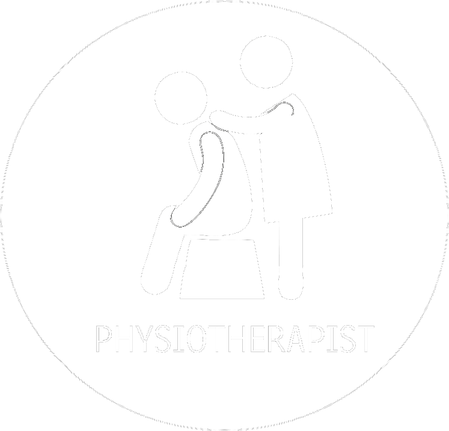

Treatment
Treatment for Osteoporosis needs
- Risk Factor Reduction
- Nutritional Recommendations
- Pharmacological Therapies
- Surgical Treatment
- Miscellaneous (Exercise, Psychological and Practical Support)
Risk Factor Reduction
- Supervision in cases of steroids & thyroid hormone replacement Anti Epilepsy & antacid therapy
- Cessation of smoking and alcohol intake
- Eye-sight correction to reduce falls
- Hip protectors to avoid hip fracture in elderly
- Avoid exposed wires, slippery rugs, loose carpets etc inside the home.
Nutritional Recommendations

- Calcium
- Vitamin D
Surgical Treatment
- 
- Fragility Fractures – commonly around –Wrist, Hip, Pelvis, Spine Some times the fracture union not possible with conservative treatment like POP then surgical interventions available For more info - please visit AFI website: www.arthfound.org
Miscellaneous
- Exercise
- Weight-bearing exercise
- Maintains and builds up bone mass
- Better balance
- Fall prevention
- Psychological and practical support
- Rehabilitation
- Counseling for prevention of second fracture, treatment of Osteoporosis